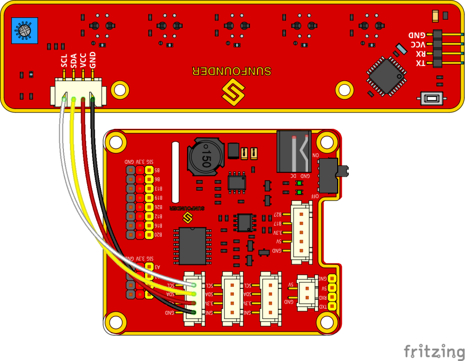

ラインフォロー¶
動作原理¶
ラインフォロワーは周囲の環境でラインを検出し、データをプロセッサーに転送する。プロセッサはデータを分析し、前輪と後輪の動きを制御するコマンドを送信する。
手順¶
ステップ1 組み立て
**M3*10ネジ*8と**M3ナット**を使用してライトフォロアをセンサーコネクタに接続し、2つの**M3*10ネジ**と2つの**M3ナット**を使ってそれらを車に組み立てる。指でナットを下に持ってください。

ステップ2 配線
以下に示すように、4ピンのアンチリバースケーブルでラインフォロアモジュールをロボットHATSに接続する。
ステップ3 テスト
ディレクトリの例をチェックする：
cd ~/SunFounder_PiCar-S/example
i2c-toolsを介してi2cデバイスが認識されているかどうかを確認する
sudo i2cdetect -y 1
11がラインフォロワーのi2cアドレスであることが判明した。表示されない場合は、配線が正しくなく、Raspberry Piとのi2c通信も失敗したことを示す。次のステップの前に配線を確認する必要がある。
テストコードを実行する。
python3 test_line_module.py
注釈
ラインフォローモジュールをより適切に機能させるために、感度を調整してください。手順は次のとおりである：
モジュールを白い表面に置き、値を読み取る。白い表面に置き、値を読み取る。
差を計算し、最大値になるまで、次のモジュールのポテンショメーターを時計回りと反時計回りに回転させる。これでデバッグは完了した。
ステップ4 実行を開始する！
ラインフォロワーコードを実行する
python3 line_follower.py
プログラムの実行が開始されると、補正のヒントが画面に表示される。まずは白い表面でモジュールを補正する。ラインフォロアの5つのプローブすべてを白いボードの上に配置する。完了した補正のプロンプトが数秒後に画面に表示される。次に、黒い線の補正に進む。また、開始のプロンプトが画面に表示され、すべてのプローブが黒い線の上に配置される。完了した補正のプロンプトが数秒後に画面に表示される。
モジュールの補正がすべて完了すると、車を走らせることができる。プローブ付きのPiCar-Sをホワイトボードの黒い線の上に置くと、線自体に従って進む。
ラインフォローの追跡を作る方法¶
車が黒い線をたどるように追跡を作成するには、次の材料を準備しなければならない：
大きな紙、黒いテープのロール（黒い線）、ハードカードボード（サイズはトラックのサイズによって異なる）、または床や机などの平らな面。
1. Spread the paper out smoothly on the hard board, and paste on the board or flat surface.
テープを紙に貼り付ける。
作成のルール：
- 黒い線の幅：約18〜30mm、2つのプローブ間の距離、2つの隣接していないプローブ
の最小距離以下
- 2本の線の間隔：モジュール全体の幅である125mm以上で、2本の線を同時に検出した
ときに車が混乱することを防ぐ。
- 曲線の直径：138mm以上。前輪が左または右に45度回転する場合、車が曲がる経路の
半径はホイールベース（前輪の中心と後輪の中心間の距離）と等しくなる。カーブの半径が小さすぎると、車はカーブをスムーズに曲がったり、通過したりことはできない。
追跡のサンプルを以下に示す（元のマップファイルは**github**のフォルダー**マップ**の下にある）：
line_follower.pyのコードの説明¶
ワークフロー全体
マイナスの環境要因の干渉を考慮して、実際に使用する前にラインフォロワーセンサーを補正しなければならない。
ここでは、ラインフォロワー補正とラインフォロイングを含む2つの主要な機能がメインプログラムに含まれている。
ラインフォロワー補正機能のサブフロー
ラインフォロア構成を実行するときは、センサーの上限と下限に近い、白色、次に黒色から始める。それから黒と白の平均値を基準値として使用し、検出された値が基準よりも高い場合、白でなければならない。検出された値が参照よりも低い場合は、黒になる。5つの検出器のステータスを5つの要素[0,0,0,0,0]で示す。
ライン追跡機能のサブフロー
ラインフォロー機能では、プローブの検出結果に応じてサーボの回転角度を異なるレベルに設定する。車の前の線が小さなカーブとして検出された場合、車は小さな角度で曲がる。大きいと車は大きい角度で曲がる。したがって、ここでは、a_step、b_step、c_step、d_stepの4つの角度回転定数を設定する。
もともと車が前進するとき、サーボは90度である。車を運転して左折するには、サーボを90度以上の角度にしなければならない。右折するには、サーボは90ステップの角度でなければならない。
特別な場合もある：車がコースから外れ、すべてのプローブが黒い線を検出できなくなった場合、以下のプログラムが続行される。
場合によっては、特にカーブの半径が非常に小さい方向(1)に車が曲がる場合、車が軌道を使い果たして黒い線を検出できない場合がある(2)。このような場合に応答プログラムがないと、車は再び軌道を追うことができなくなる。したがって、車を反対方向に後退させるように応答プログラムを設定し(3)、次に黒い線が再び検出されるまで元の方向に戻り、前に進む(4)。
機能説明
コードのロジックは、上記のフローチャートに示すとおりである。
インポートされた**SunFounder_Line_Follower**、front_wheels、**back_wheels**を含む3つのPythonモジュールがコードで使用されている。これらはこのキットのドライバーであり、それぞれラインフォロー、前輪と後輪となっている。
関連クラスはここで定義されている。モジュールを適用して使用すると、関連するクラスのオブジェクトが作成され、ハードウェアのさまざまな部分がクラスオブジェクトによる関数を呼び出すことによって駆動される。
次のモジュールと同様に、**lf**という名前のオブジェクトを作成する：
lf = Line_Follower_module.Line_Follower(references=REFERENCES)
パラメータは初期値であり、クラスオブジェクトを呼び出して関数を適用する。
lf.read_digital()
この機能はすべてのプローブのアナログ信号を読み取り、それをデジタル信号に変換するために使用される。信号が参照よりも大きい場合、対応するパラメーターは0になり、基準より低い場合、パラメーターは1になる。プローブは5つあるため、5つのパラメーターのリストを取得する。
fw.turn(turning_angle)
前輪回転機能。メインプログラムは前輪を回す場合にこの関数を呼び出す。パラメータは回転角度となっている。
bw.forward()
bw.set_speed(forward_speed)
後輪には2つの機能が必要である。1つは回転方向を順方向に制御する（後ろに回転するには、bw.backward()）。2つ目は回転速度を設定する。パラメータは速度の値である（範囲0〜100）。パラメータが大きければ大きいほど、ホイールの回転が速くなる。